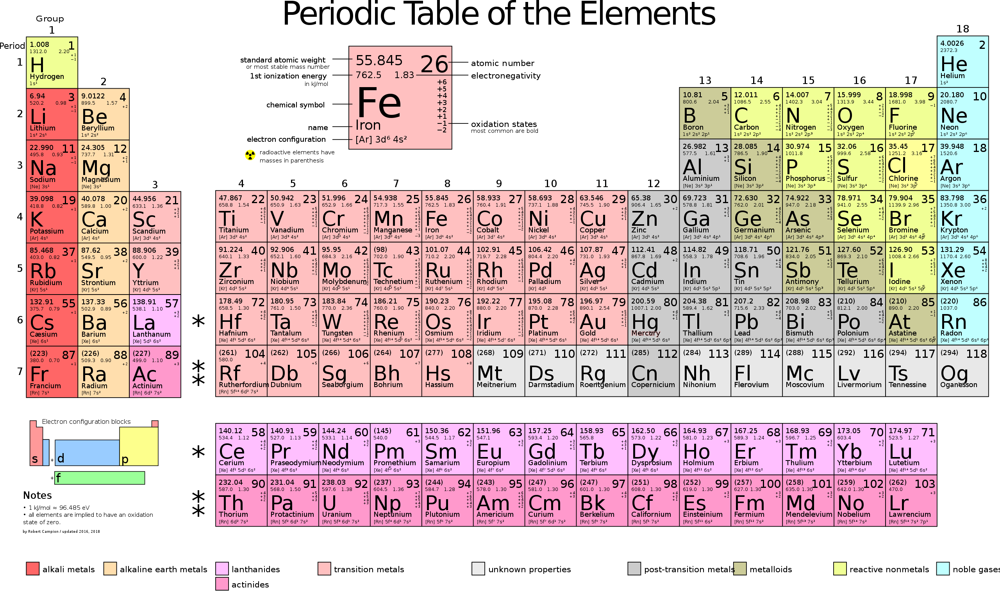
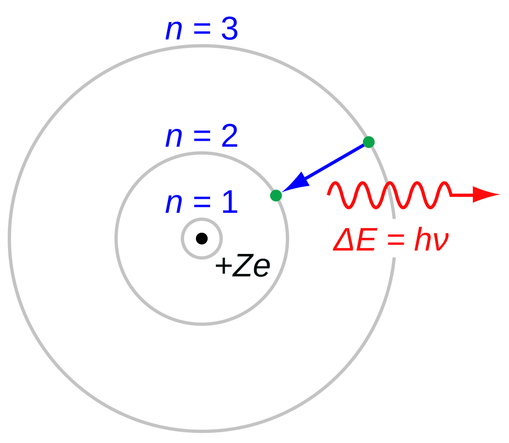
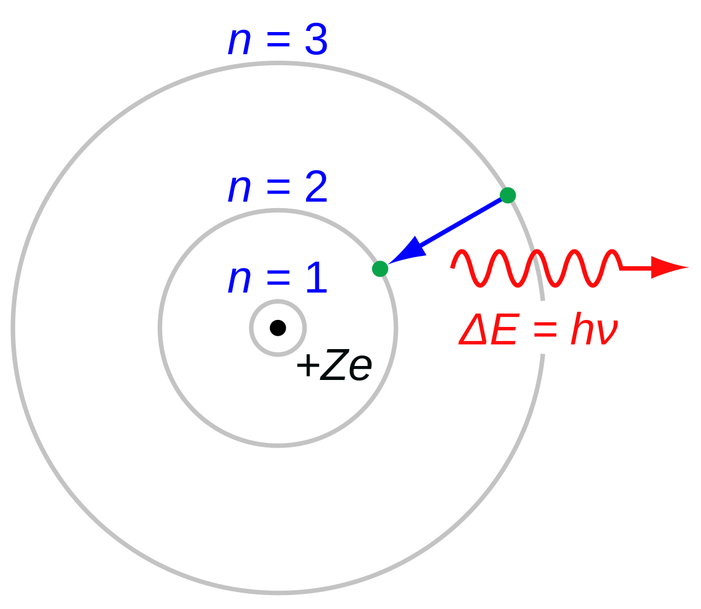
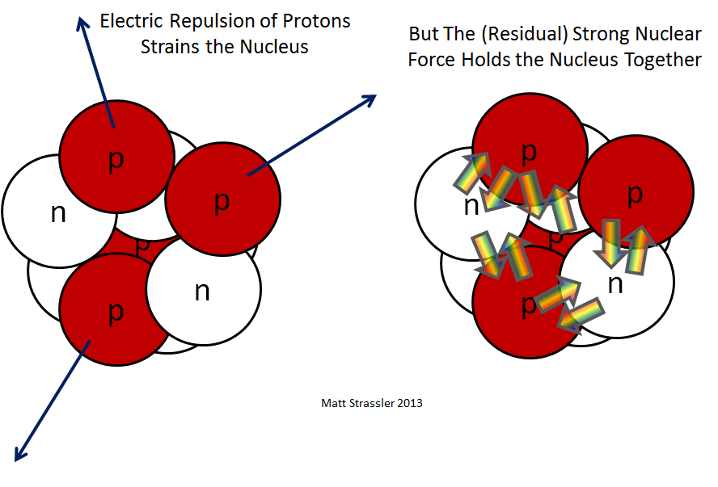
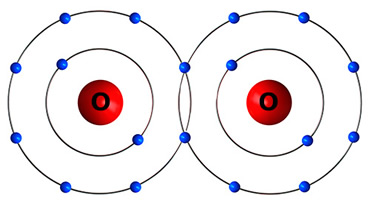
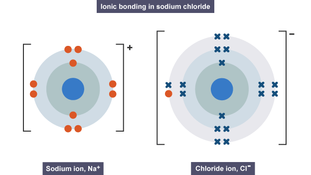
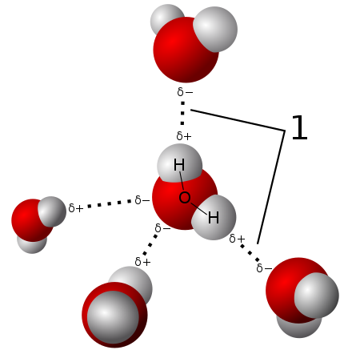
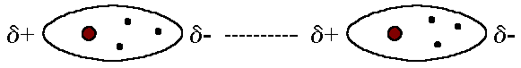

Molecular Dynamics
Contents
Atomic Structure
[Hide]
Here is a periodic table for reference.

Neils Bohrs suggested an alternative model in which electrons stay in fixed orbits around the nucleus. While they are in one of these orbits they do not radiate electromagnetic waves. They can jump from a low orbit to a high orbit if they absorb just enough energy - the difference in energy between the two orbits. They can jump from a high orbit to a low orbit by emitting a precise amount of electromagnetic energy - the difference between the two orbits. In the Bohr model, we treat the nucleus and each electon as a point particle. Electrons are quantized in orbits, which are identified through their principal quantum number $n$, around the nucleus. The radius of the orbits/shells increases as $n^2$.  This simplistic model is useful, but due to the wave-particle duality of matter, we use electron clouds. The Bohr model is also limited in the way that it can't distinguish subshells and orbitals. In the atomic orbital model, shells are divided up into subshells, which are labeled $l = s, p, d, f, g$. The $s, p, d, f, g$ subshell can contain at max $2, 6, 10, 14, 18$ electrons, respectively. For each shell, we can decompose it into subshells of the form:
Isotopes are atoms of the same element that contain an identical number of protons, but a different number of neutrons. Isotopes of the same element have very similar physical properties, but isotopes with too many neutrons will under radioactive decay, losing neutrons and protons, to become other elements. But the rate at which these elements decay differs per isotope, and we have data regarding the half-life of these isotopes. They are usually written with their mass number.
Like usual, the electron configuration of ions are gotten by taking electrons away from the valence shell and the highest orbitals. Take a look for nickel.
The following are much weaker forces, which aren't really strong enough to be bonds but are sometimes colloquially classified as them.
The Lennard-Jones potential is an intermolecular pair potential that simply models the repulsive and attractive interactions between electronically neutral atoms/molecules. It is defined \[V_{LJ} (r) = 4 \epsilon \Bigg[ \bigg(\frac{\sigma}{r}\bigg)^{12} - \bigg(\frac{\sigma}{r}\bigg)^6 \Bigg]\] where $r$ is the distance between two interacting particles, $\epsilon$ is the depth of the potential well, and $\sigma$ is the size of the particle. These parameters can be adjusted depending on the type of particle one is working with. The Lennard-Jones potential is a simplified model that describes the essential features of interactions between two simple particles: The potential function has a minimum at $r_m = 2^{1/6} \sigma$. For $r < r_m$, the potential is decreasing, that is $V_{LJ}^\prime (r) < 0$, while for $r > r_m$, $V_{LJ}^\prime (r) > 0$ but, as mentioned before, approaches $0$ as $r \rightarrow \infty$.
The potential function has a minimum at $r_m = 2^{1/6} \sigma$. For $r < r_m$, the potential is decreasing, that is $V_{LJ}^\prime (r) < 0$, while for $r > r_m$, $V_{LJ}^\prime (r) > 0$ but, as mentioned before, approaches $0$ as $r \rightarrow \infty$.
Structure of an Atom: Electron Shells & Orbitals
At the atomic scale, a different form of units is used:
- An atomic mass unit (amu) is equivalent to $1.66054 \times 10^{-27} \text{ kg}$.
- An angstrom Å is equivalent to $1 \times 10^{-10} \text{ m}$. The diameter of an atom is on the scale of $1$ angstrom.
- An elementary charge unit ($e$) is equivalent to $1.602 \times 10^{-19} \text{ C}$.
- Protons have a charge of $+1 e$ and a mass of $1 \text{amu}$, located in the nucleus.
- Neutrons have a charge of $0 e$ and a mass of $1 \text{amu}$, located in the nucleus.
- Electrons have a charge of $-1 e$ and a mass of $~0 \text{amu}$, located in orbitals.
- The atomic number is the number of protons in an atom. It is this number of protons that determines what the element is.
- The mass number is the sum of the number of neutrons and protons.
- The atomic mass is the average mass of the atom, taking into account all its naturally occurring isotopes. It is usually similar to the mass number.
Neils Bohrs suggested an alternative model in which electrons stay in fixed orbits around the nucleus. While they are in one of these orbits they do not radiate electromagnetic waves. They can jump from a low orbit to a high orbit if they absorb just enough energy - the difference in energy between the two orbits. They can jump from a high orbit to a low orbit by emitting a precise amount of electromagnetic energy - the difference between the two orbits. In the Bohr model, we treat the nucleus and each electon as a point particle. Electrons are quantized in orbits, which are identified through their principal quantum number $n$, around the nucleus. The radius of the orbits/shells increases as $n^2$.  This simplistic model is useful, but due to the wave-particle duality of matter, we use electron clouds. The Bohr model is also limited in the way that it can't distinguish subshells and orbitals. In the atomic orbital model, shells are divided up into subshells, which are labeled $l = s, p, d, f, g$. The $s, p, d, f, g$ subshell can contain at max $2, 6, 10, 14, 18$ electrons, respectively. For each shell, we can decompose it into subshells of the form:
- 1st: $1s^2$ can contain $2$ electrons.
- 2nd: $2s^2\; 2 p^6$ can contain $2+6=8$ electrons.
- 3rd: $3s^2\; 3p^6\; 3 d^{10}$ can contain $2+6+10=18$ electrons.
- 4th: $4s^2\; 4p^6\; 4d^{10}\; 4f^{14}$ can contain $2+6+10+14=32$ electrons.
- 5th: $5s^2\; 5p^6\; 5d^{10}\; 5f^{14}\; 5g^{18}$ can contain $2+6+10+14+18=50$ electrons.
- the $s$ subshell contains 1 orbital
- the $p$ subshell contains 3 orbitals
- the $d$ subshell contains 5 orbitals
- The $f$ subshell contains 7 orbitals
- Copper has an electron configuration of: $1s^2 2s^2 2p^6 3s^2 3p^6 3d^{10} 4s^1$, rather than $1s^2 2s^2 2p^6 3s^2 3p^6 3d^{9} 4s^2$
Strong Force, Isotopes, and Radioactivity
By the electromagnetic force, the positively charged protons in the nucleus should repel each other and cause the atom to disintegrate. However, the strong force, which is extremely strong over subatomic scales, overpowers the electromagnetic force and keeps the nucleus intact. The net energy associated with the balance of the strong force and the force of repulsion is called the binding energy.

In some atoms, the binding energy is great enough to hold the nucleus together. The nucleus of this kind of atom is said to be stable. In some atoms the binding energy is not strong enough to hold the nucleus together, and the nuclei of these atoms are said to be unstable. Unstable atoms are also called radioactive atoms and they will lose neutrons and protons as they attempt to become stable.
Isotopes are atoms of the same element that contain an identical number of protons, but a different number of neutrons. Isotopes of the same element have very similar physical properties, but isotopes with too many neutrons will under radioactive decay, losing neutrons and protons, to become other elements. But the rate at which these elements decay differs per isotope, and we have data regarding the half-life of these isotopes. They are usually written with their mass number.
- Stable atoms do not undergo radioactive decay: Hydrogen-1 (0 neutron), Hydrogen-2 (1 neutron), Carbon-12 (6 neutrons), Helium-4 (2 neutrons)
- Unstable, or radioactive, isotopes with differing half-lives: Carbon-14 (5730 yr), Hydrogen-3 (12yr), Chlorine-36 (301k yr), Uranium-235 (700m yr), Uranium-238 (4.5b yr), Xenon-124 ($1.8 \times 10^{22}$ yr).
Ions and Charges
A charged atom is called an ion. If it has more protons than electrons, it is a cation, and if it has more electrons than electrons, it is an anion. We can ionize an atom by shooting energy into an electron, allowing it to overcome its binding energy that holds the electron. Opposite electric charges are pulled towards one another by electrostatic force, so cations and anions attract each other and readily form ionic compounds.
Like usual, the electron configuration of ions are gotten by taking electrons away from the valence shell and the highest orbitals. Take a look for nickel.
- $Ni\; \;\;\,:\; 1s^2 2s^2 2p^6 3s^2 3p^6 3d^8 4s^2$
- $Ni^{1+}: \; 1s^2 2s^2 2p^6 3s^2 3p^6 3d^8 4s^1$
- $Ni^{2+}: \; 1s^2 2s^2 2p^6 3s^2 3p^6 3d^8$
- $Ni^{3+}: \; 1s^2 2s^2 2p^6 3s^2 3p^6 3d^7$
Covalent and Ionic Bonding
The valence electrons of an atom are quite significant. Electrons lie in shells, and each shell becomes more stable once it contains a certain number of electrons, as dictated by quantum theory. Therefore, atoms naturally bond with each other to make their arrangement of electrons more stable, sharing or swapping electrons with each other. The tendency for an atom to attract shared electrons is measured as its electronegativity. Similarly, the loosely defined term electropositivity characterizes the element's tendency to donate valence electrons.
- Covalent bond is a chemical bond that involves the sharing of electron pairs between atoms, allowing each atom to attain the equivalent of a full valence shell. Covalent bonds occur between 2 atoms without a big difference in electronegativity. 
- Ionic bonding is a type of chemical bonding that involves the electrostatic attraction between oppositely charged ions (a cation and an anion). One atom with extremely high electronegativity would "take" an electron from an electropositive atom, leading to two ions. In the simplest case, the cation is a metal atom and the anion is a nonmetal atom, but they can be molecular ions. 
The following are much weaker forces, which aren't really strong enough to be bonds but are sometimes colloquially classified as them.
- Hydrogen bonds are primarily electrostatic forces of attraction between a hydrogen atom which is covalently bounded to a more electronegative atom. They are relatively weak interactions that arise as polariation effects between hydrogens and other atoms. 
- The London dispersion force is the weakest intermolecular force. It is a temporary attractive force that results when the electrons in two adjacent atoms occupy positions that make the atoms form temporary dipoles. The superposition of the electrons can cause them to develop an instantaneous dipole when its electrons are distributed asymetrically about the nucleus, which can distort adjacent atoms since electrons repel one another. 
Pauli Repulsion and Lennard-Jones Potential
When the atoms come together, Pauli repulsion comes into play. As the nuclei approach one another, the wave-functions of the electrons in the outer shells of the two atoms will have significant overlap. Due to the Pauli exclusion principle, some of the electrons in these shells are forced into higher energy states, leading to higher overall energy and a stronger net repulsive force.
The Lennard-Jones potential is an intermolecular pair potential that simply models the repulsive and attractive interactions between electronically neutral atoms/molecules. It is defined \[V_{LJ} (r) = 4 \epsilon \Bigg[ \bigg(\frac{\sigma}{r}\bigg)^{12} - \bigg(\frac{\sigma}{r}\bigg)^6 \Bigg]\] where $r$ is the distance between two interacting particles, $\epsilon$ is the depth of the potential well, and $\sigma$ is the size of the particle. These parameters can be adjusted depending on the type of particle one is working with. The Lennard-Jones potential is a simplified model that describes the essential features of interactions between two simple particles:
- The repulsive term $1/r^{12}$ describes the Pauli repulsion at short distances (potential explodes in size as $r \rightarrow 0$).
- The attractive term $1/r^6$ describes attraction at moderate ranged interactions due to the London dispersion force, which vanishes at infinite distance between two particles.
Mechanics of Particles
[Hide]
For motion of $N$ particles in $\mathbb{R}^3$, the $i$th particle has position vector of $\mathbf{q_i} \in \mathbb{R}^3$, and the position vector of the whole system is $\mathbf{q} \in \mathbb{R}^{3N}$.
\[\mathbf{q} = \begin{pmatrix} \mathbf{q_1} \\ \mathbf{q_2} \\ \vdots \\ \mathbf{q_N} \end{pmatrix} = \begin{pmatrix} q_{1x} \\ q_{1y} \\ q_{1z} \\ \vdots \\ q_{Nx} \\ q_{Ny} \\ q_{Nz} \end{pmatrix} \in \mathbb{R}^{3N}\]
Assuming that all forces are conservative, we have a potential function $U: \mathbb{R}^{3N} \longrightarrow \mathbb{R}$.
\[U(\mathbf{r_1}, \mathbf{r_2}, \ldots, \mathbf{r_N}) = U \Bigg\{ \begin{pmatrix} r_{1x} \\ r_{1y} \\ r_{1z} \end{pmatrix}, \begin{pmatrix} r_{2x} \\ r_{2y} \\ r_{2z} \end{pmatrix}, \ldots, \begin{pmatrix} r_{Nx} \\ r_{Ny} \\ r_{Nz} \end{pmatrix} \Bigg\}\]
and taking the gradient of that would generate a force field $-\nabla U = \mathbf{F}: \mathbb{R}^{3N} \longrightarrow \mathbb{R}^{3N}$. Expanding out the components, we would have:
\[\begin{bmatrix} \begin{pmatrix} \\ \mathbf{F_1} \\ \\ \end{pmatrix} \\ \vdots \\ \begin{pmatrix} \\ \mathbf{F_1} \\ \\ \end{pmatrix} \end{bmatrix} =
\begin{bmatrix} \begin{pmatrix} \\ -\nabla_{\mathbf{r_1}} U \\ \\ \end{pmatrix} \\ \vdots \\ \begin{pmatrix} \\ -\nabla_{\mathbf{r_N}} U\\ \\ \end{pmatrix} \end{bmatrix} =
\begin{bmatrix} \begin{pmatrix} \\ -\partial U/ \partial \mathbf{r_1} \\ \\ \end{pmatrix} \\ \vdots \\ \begin{pmatrix} \\ -\partial U/ \partial \mathbf{r_N} \\ \\ \end{pmatrix} \end{bmatrix} =
\begin{bmatrix} -\partial U / \partial {r_{1x}} \\ -\partial U / \partial {r_{1y}} \\ -\partial U / \partial {r_{1z}} \\ \vdots \\ -\partial U / \partial {r_{3x}} \\ -\partial U / \partial {r_{3y}} \\ -\partial U / \partial {r_{3z}} \end{bmatrix} \]
which is equivalent to saying for all $i = 1, 2, \ldots N$, that
\[\mathbf{F_i} = -\nabla_{\mathbf{r_i}} U\]
The equations of motion become
\[\mathbf{M}\, \frac{d^2}{dt^2} \mathbf{q} = \mathbf{F}(\mathbf{q}) = -\nabla U(\mathbf{q})\]
where we let $\mathbf{M} = \text{diag}(m_1, m_1, m_1, \ldots, m_N, m_N, m_N)$. The total energy of the $N$-body system is the sum of the kinetic energy (which is dependent on the velocity vectors) and potential energy (which is dependent on the position vectors).
\begin{align*}
E(\mathbf{q_1}, \mathbf{q_2}, \ldots, \mathbf{q_N}, \mathbf{\dot{q_1}}, \mathbf{\dot{q_2}}, \ldots, \mathbf{\dot{q_N}}) & = T(\mathbf{\dot{q_1}}, \mathbf{\dot{q_2}}, \ldots, \mathbf{\dot{q_N}}) + U(\mathbf{q_1}, \mathbf{q_2}, \ldots, \mathbf{q_N})\\
& = \sum_{j=1}^N \frac{1}{2} m_j ||\mathbf{\dot{q_j}}||^2 + U(\mathbf{q_1}, \mathbf{q_2}, \ldots, \mathbf{q_N})
\end{align*}
Without accounting for environmental conditions, we have two conservation laws:
- Conservation of Energy: The derivative of $E$ vanishes, so it is conserved. \[\frac{d}{dt} E = \sum_{j=1}^N m_j \mathbf{\dot{q}}_j \cdot \mathbf{\ddot{q}}_j + \sum_{j=1}^N \frac{\partial U}{\partial \mathbf{q}_j} \, \mathbf{\dot{q}}_j = \sum_{j=1}^N \bigg( m_j \mathbf{\ddot{q}}_j + \frac{\partial U}{\partial \mathbf{q}_j} \bigg) \cdot \mathbf{\dot{q}}_j = 0 \]
- Conservation of Total Momentum: $\mathbf{F}_{ij}$ represents the force of particle $j$ acting on particle $i$ (i.e. $i$ is traveling in a force field created by $j$). By Netwon's third law, we have $\mathbf{F}_{ij} = - \mathbf{F}_{ji}$. So, since the total force acting on particle $i$ is \[\mathbf{F}_i = \sum_{j \neq i} \mathbf{F}_{ij}\] and since $\mathbf{F}_i = d \mathbf{p}_i / dt$, we have \[\sum_{i=1}^N \frac{d \mathbf{p}_i}{d t} = \sum_{i=1}^N \mathbf{F}_i = 0\] and thus the total momentum vector \[\mathbf{p}_\text{tot} \equiv \sum_{i=1}^N \mathbf{p}_i\] is conserved.
- When $r < r_m$, we have $V_{LJ}^\prime (r) < 0$ and so the unit vector has a positive coefficient. So, $F_{ij}$ points outward.
- When $r > r_m$, we have $V_{LJ}^\prime (r) > 0$ and so the unit vector has a negative coefficient. So, $F_{ij}$ points inward.
TBD
[Hide]TBD
[Hide]